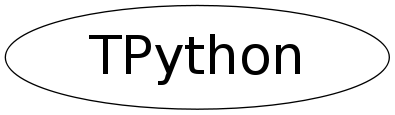

class TPython
Python interpreter access
The TPython class allows for access to python objects from CINT. The current
functionality is only basic: ROOT objects and builtin types can freely cross
the boundary between the two interpreters, python objects can be instantiated
and their methods can be called. All other cross-coding is based on strings
that are run on the python interpreter.
Examples:
$ cat MyPyClass.py
print 'creating class MyPyClass ... '
class MyPyClass:
def __init__( self ):
print 'in MyPyClass.__init__'
def gime( self, what ):
return what
$ root -l
// Execute a string of python code.
root [0] TPython::Exec( "print \'Hello World!\'" );
Hello World!
// Create a TBrowser on the python side, and transfer it back and forth.
// Note the required explicit (void*) cast!
root [1] TBrowser* b = (void*)TPython::Eval( "ROOT.TBrowser()" );
root [2] TPython::Bind( b, "b" );
root [3] b == (void*) TPython::Eval( "b" )
(int)1
// Builtin variables can cross-over by using implicit casts.
root [4] int i = TPython::Eval( "1 + 1" );
root [5] i
(int)2
// Load a python module with a class definition, and use it. Casts are
// necessary as the type information can not be otherwise derived.
root [6] TPython::LoadMacro( "MyPyClass.py" );
creating class MyPyClass ...
root [7] MyPyClass m;
in MyPyClass.__init__
root [8] std::string s = (char*)m.gime( "aap" );
root [9] s
(class TString)"aap"
It is possible to switch between interpreters by calling "TPython::Prompt()"
on the CINT side, while returning with ^D (EOF). State is preserved between
successive switches.
The API part provides (direct) C++ access to the bindings functionality of
PyROOT. It allows verifying that you deal with a PyROOT python object in the
first place (ObjectProxy_Check for ObjectProxy and any derived types, as well
as ObjectProxy_CheckExact for ObjectProxy's only); and it allows conversions
of void* to an ObjectProxy and vice versa.
Function Members (Methods)
public:
| TPython() | |
| TPython(const TPython&) | |
| virtual | ~TPython() |
| static Bool_t | Bind(TObject* object, const char* label) |
| static TClass* | Class() |
| static const TPyReturn | Eval(const char* expr) |
| static Bool_t | Exec(const char* cmd) |
| static void | ExecScript(const char* name, int argc = 0, const char** argv = 0) |
| virtual TClass* | IsA() const |
| static void | LoadMacro(const char* name) |
| static void* | ObjectProxy_AsVoidPtr(PyObject* pyobject) |
| static Bool_t | ObjectProxy_Check(PyObject* pyobject) |
| static Bool_t | ObjectProxy_CheckExact(PyObject* pyobject) |
| static PyObject* | ObjectProxy_FromVoidPtr(void* addr, const char* classname) |
| TPython& | operator=(const TPython&) |
| static void | Prompt() |
| virtual void | ShowMembers(TMemberInspector& insp) |
| virtual void | Streamer(TBuffer& b) |
| void | StreamerNVirtual(TBuffer& b) |
private:
| static Bool_t | Initialize() |
Class Charts
{kind=link}
{kind=link}
{kind=link}
{kind=link}

Function documentation
Bool_t Initialize()
Private initialization method: setup the python interpreter and load the ROOT module.
void LoadMacro(const char* name)
Execute the give python script as if it were a macro (effectively an execfile in __main__), and create CINT equivalents for any newly available python classes.
void ExecScript(const char* name, int argc = 0, const char** argv = 0)
Execute a python stand-alone script, with argv CLI arguments.
example of use:
const char* argv[] = { "1", "2", "3" };
TPython::ExecScript( "test.py", sizeof(argv)/sizeof(argv[0]), argv );
void Prompt()
Enter an interactive python session (exit with ^D). State is preserved between successive calls.
Bool_t ObjectProxy_Check(PyObject* pyobject)
Test whether the type of the given pyobject is of ObjectProxy type or any derived type.
Bool_t ObjectProxy_CheckExact(PyObject* pyobject)
Test whether the type of the given pyobject is ObjectProxy type.
void* ObjectProxy_AsVoidPtr(PyObject* pyobject)
Extract the object pointer held by the ObjectProxy pyobject.
PyObject* ObjectProxy_FromVoidPtr(void* addr, const char* classname)
Bind the addr to a python object of class defined by classname.